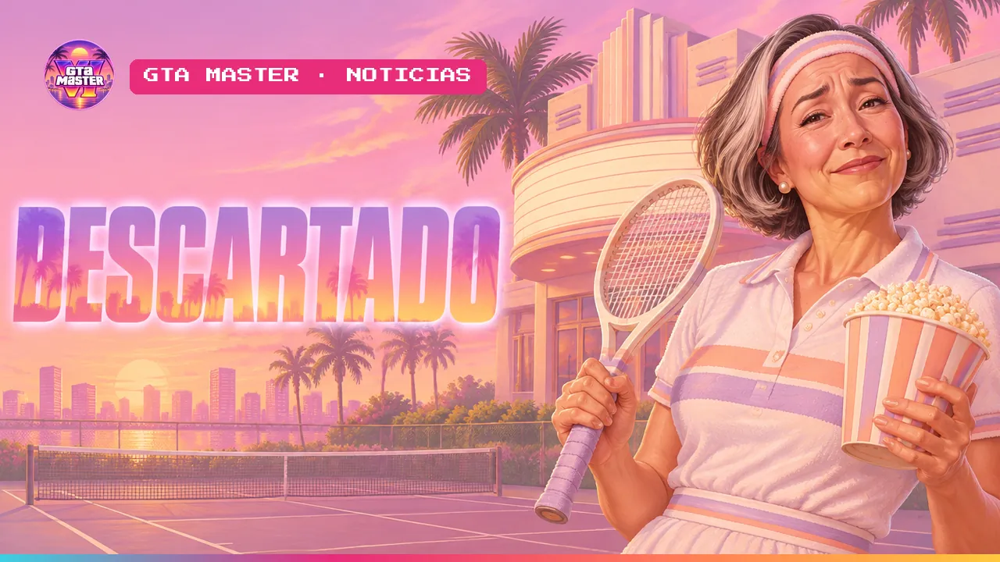

Noticias
Noticias
GTA 6 contenido cortado: cines, tenis y las ideas que Rockstar descartó al final

GTA 6 contenido cortado: Rockstar confirma que quitó cines, teatros, tenis, guaridas decorables y crafteo. Te contamos qué se cortó, por qué y qué cambió.
Rockstar ha confirmado por fin parte del contenido cortado de GTA 6: hubo cines y teatros, un minijuego de tenis, guaridas decorables, fabricación de objetos y la opción de arrastrar cuerpos, y nada de eso llegó a la versión final. Lo han contado dos responsables del estudio, Rob Nelson y Scott Mitchell, en una entrevista con la revista alemana PC Games que recogió Vandal este miércoles 25 de noviembre.
No es una filtración ni un rumor de foro: son los propios desarrolladores explicando qué se quedó en el cajón y por qué. Y llega justo cuando muchos jugadores, después de las primeras decenas de horas en Leonida, empiezan a echar de menos cosas que daban por hechas.
¿Qué contenido cortado de GTA 6 ha confirmado Rockstar?
Este es el resumen de lo que se quedó fuera, según las declaraciones de Nelson (director en Rockstar) y Mitchell (productor de diseño) que recoge Vandal:
| Idea descartada | ¿Estaba avanzada? | Motivo que da Rockstar |
|---|---|---|
| Cines y teatros | Estuvieron muy cerca de entrar | Poco interactivos y mucho tiempo extra de desarrollo |
| Minijuego de tenis | Rockstar quería incluirlo | El equipo no quedó contento con el resultado |
| Arrastrar cuerpos | Se estudió | Sin motivo concreto; el sigilo se queda en agacharse |
| Decorar las guaridas | Se planteó | No se detalla |
| Fabricar objetos (crafteo) | Se planteó | No se detalla |
| Comprar comida y llenar la nevera | Había especificaciones | Complicaba demasiado las mecánicas |
La última fila no viene de esta entrevista, sino de una anterior. En agosto, Rob Nelson contó a la revista japonesa Famitsu que Jason y Lucia iban a poder hacer la compra en el supermercado y reponer la nevera de casa, pero que lo simplificaron porque complicaba el juego. Lo explicó GamesRadar+ con una frase de Nelson que resume la filosofía del estudio: «we want to give meaning to each action» (queremos dar sentido a cada acción).
¿Por qué no hay cines en GTA 6?
Es la ausencia que más se comenta, porque Red Dead Redemption 2 sí tenía teatro y espectáculos en Saint Denis. Según Vandal, Nelson y Mitchell reconocen que estuvieron a punto de meterlos, pero llegaron a la conclusión de que eran actividades muy poco interactivas: te sientas, miras y poco más. Para el tiempo de desarrollo que exigían, no compensaba.
Con el tenis pasó algo distinto. Aquí no fue una cuestión de coste, sino de calidad: Rockstar quería tenerlo, lo probó y el resultado no convenció al equipo. Para quien recuerde los partidos de tenis de GTA V, es la baja más dolorosa entre los minijuegos.
¿Se pueden arrastrar cuerpos o decorar la casa en GTA 6?
No. El arrastre de cuerpos se estudió para el sigilo, pero en la versión final el sistema se limita a ir agachado. Tampoco puedes personalizar la decoración de las guaridas a tu gusto ni fabricar objetos, dos ideas que según Vandal llegaron a plantearse.
Esto conecta con una queja que está creciendo entre quienes ya han terminado la historia. Según VGTimes, hay jugadores frustrados porque en el modo historia no se pueden comprar propiedades, más allá de los garajes, ni dirigir negocios propios. Ojo: que Rockstar esté guardando todo eso para GTA Online es especulación de la comunidad, no un dato oficial. Lo que sabemos del modo online de GTA 6 lo tienes en nuestra guía.
¿Qué cambió en lugar de lo que se cortó?
No todo son recortes. En otra entrevista publicada el 25 de noviembre por Final Weapon, varios jefes de área de Rockstar explican cambios que sí están en el juego:
- Adiós al fijado de blanco por defecto. David Hynd, vicepresidente de tecnología, cuenta que quisieron quitar el bloqueo de objetivo como modo de apuntado por defecto en favor del apuntado libre con asistencia.
- Armas que se sienten distintas. Los gatillos adaptativos y la vibración diferencian cada arma, y se rehicieron los sistemas de armas y de movimiento para que respondan mejor.
- Luz que reacciona a todo. Owen Shepherd, vicepresidente de arte de iluminación, explica que puedes disparar a más luces, que abrir una puerta cambia la luz de la habitación y que las farolas y las ventanas se encienden al anochecer.
- Música que se adapta a ti. Alastair MacGregor, vicepresidente de audio, detalla un sistema no lineal que procesa la banda sonora en tiempo real.
Y hubo una idea que Rockstar intentó cambiar y no pudo. Según contó el periodista de Bloomberg Jason Schreier, y recogió Vandal en octubre, el estudio pasó mucho tiempo probando alternativas a la rueda de armas, desde un menú desplegable hasta quitar la interfaz, pero ninguna funcionó y volvieron a la de siempre. Es la versión de Schreier, no una declaración de Rockstar.
¿Volverá el contenido cortado de GTA 6 en una actualización?
Rockstar no ha dicho nada al respecto, así que cualquier promesa de que el tenis o los cines llegarán con un parche es, hoy por hoy, puro deseo. De momento, las actualizaciones que ha publicado el estudio han sido de corrección de errores, como el parche 1.002.002. Lo que sí deja claro esta entrevista es el criterio de Rockstar: si una actividad no aporta interacción real o no alcanza su nivel de calidad, se queda fuera aunque esté a medio hacer.
Para el jugador, la lectura es sencilla: Leonida no tiene de todo, pero lo que tiene está pensado para que hagas algo con ello. Si quieres repasar todo lo que sí se puede hacer, en el canal lo resumimos así:
Lo tienes también en nuestra página del vídeo, junto a la guía completa de GTA 6 y las fichas de los personajes. Y para recordar cómo presentó Rockstar ese mundo antes del lanzamiento, aquí va su vídeo oficial:
Si Rockstar confirma que alguna de estas ideas vuelve en una actualización o en GTA Online, lo contaremos aquí.


Comentarios
Los comentarios funcionan con Disqus: puedes entrar con Google, Facebook, X o tu email. Al pulsar el botón se conecta con Disqus, que usa sus propias cookies. Más información en nuestra política de privacidad.